مؤتمرات وفعاليات
مؤتمر "التعليم في خدمة الأسرة" يختتم فعالياته
اختتمت اليوم في أبوظبي فعاليات مؤتمر "التعليم في خدمة الأسرة: من الرؤية إلى الأثر"، الذي نظمته منصة واجهة التعليم بالتعاون مع جامعة محمد بن زايد للعلوم الإنسانية
مقالات وأخبار وقراءات من مجتمع جامعة محمد بن زايد للعلوم الإنسانية · العدد التجريبي
اختتمت اليوم في أبوظبي فعاليات مؤتمر "التعليم في خدمة الأسرة: من الرؤية إلى الأثر"، الذي نظمته منصة واجهة التعليم بالتعاون مع جامعة محمد بن زايد للعلوم الإنسانية
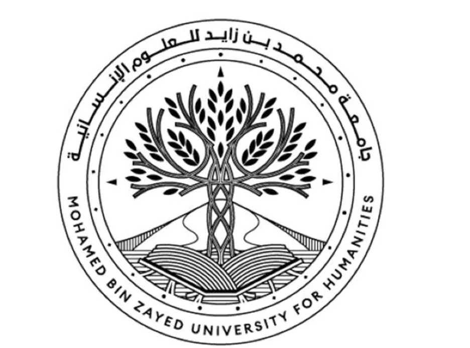


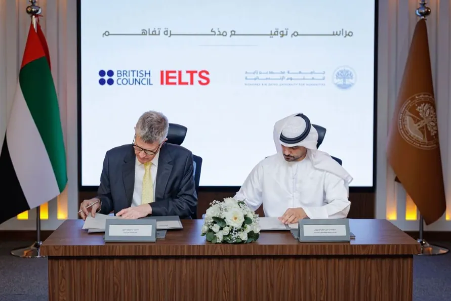
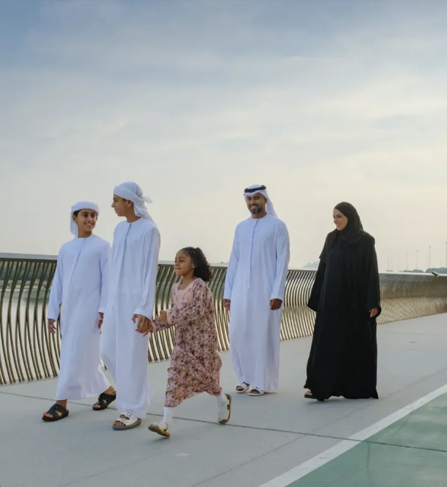
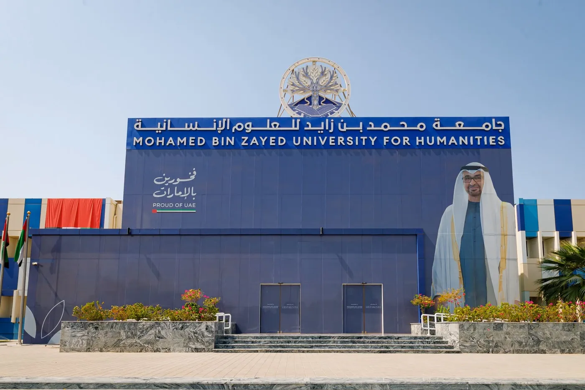


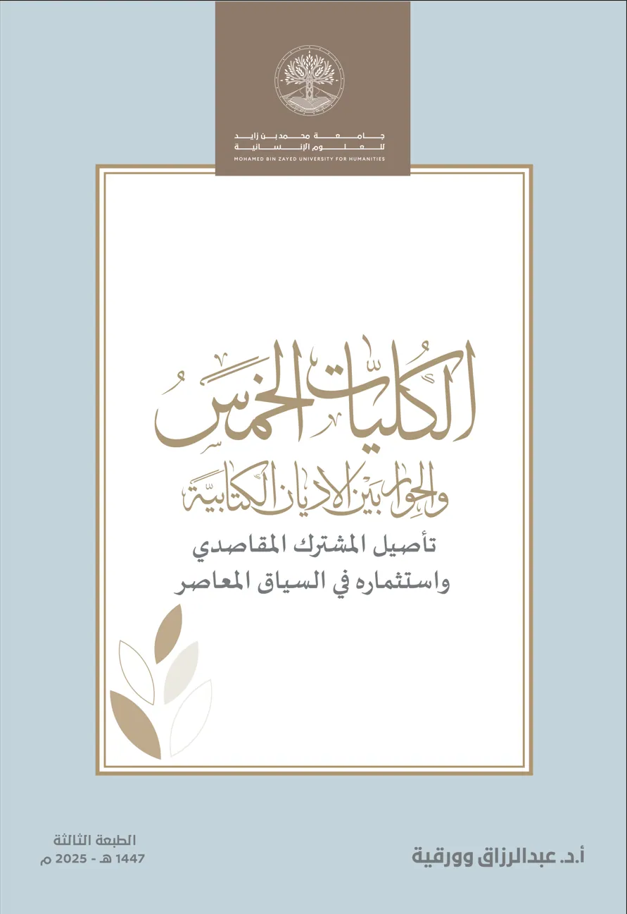
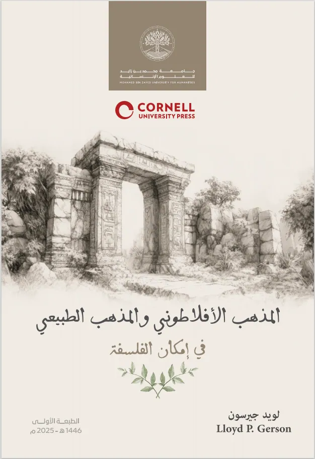
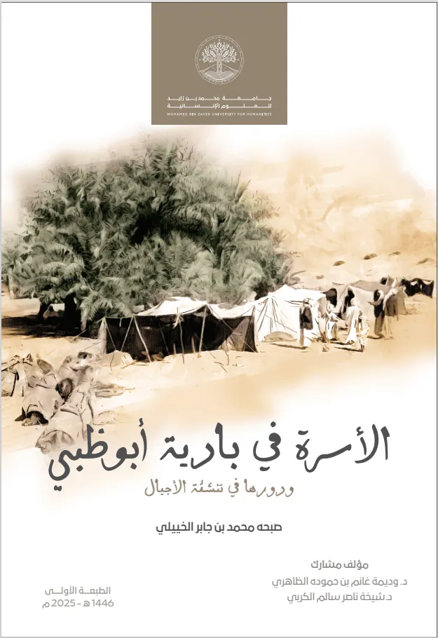
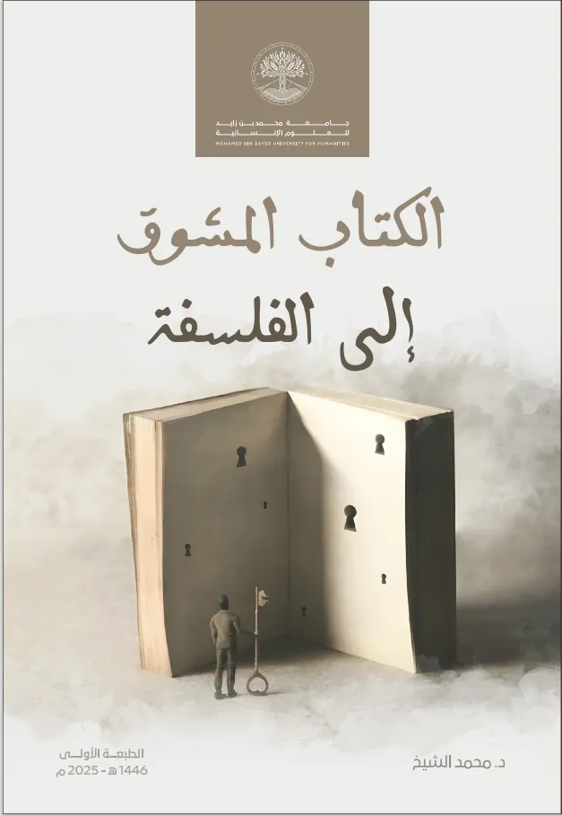
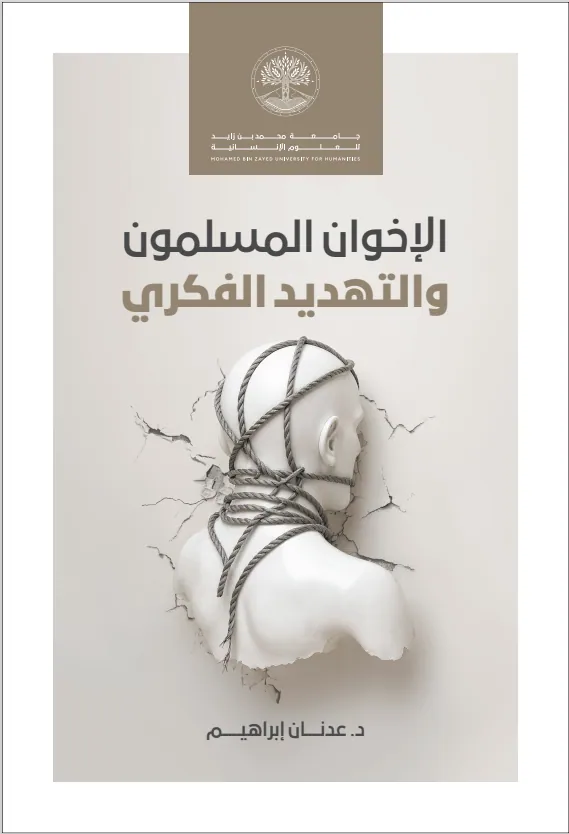
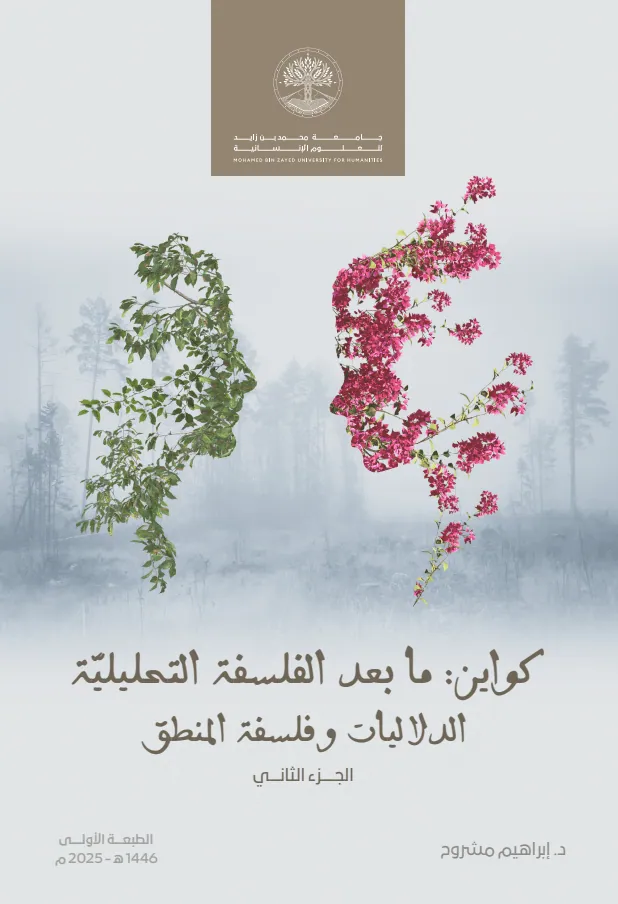
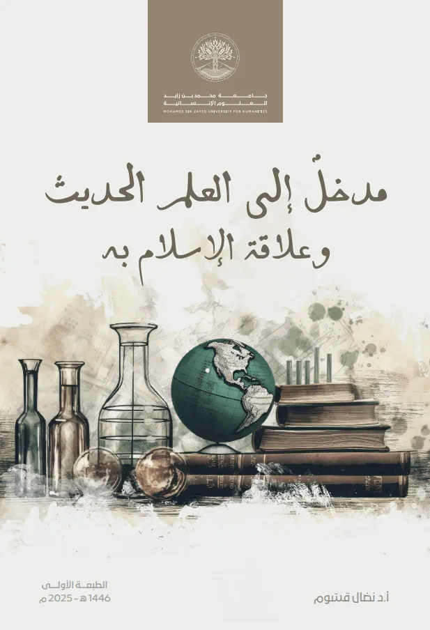
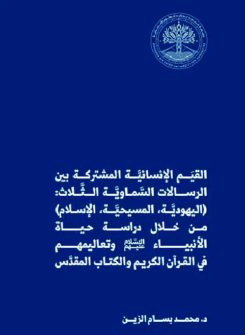
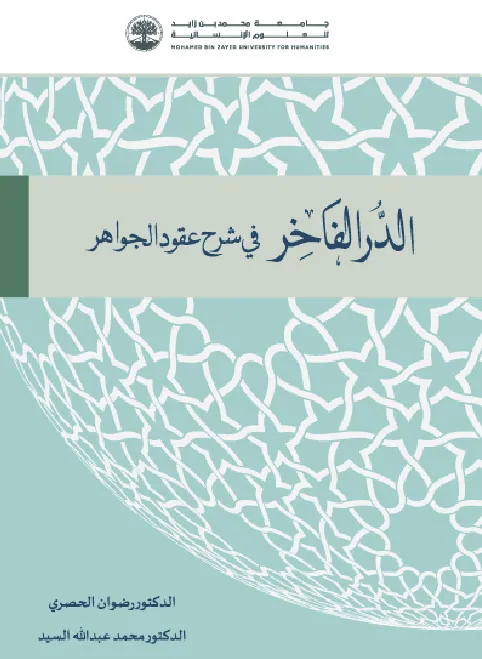
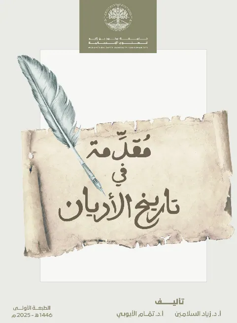
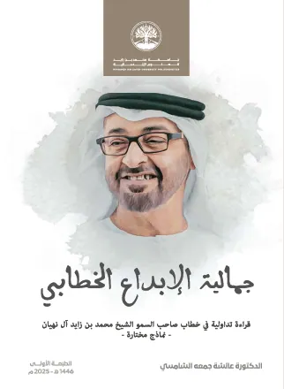
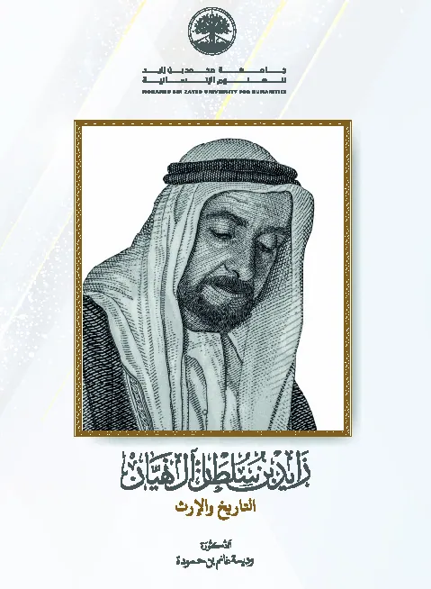
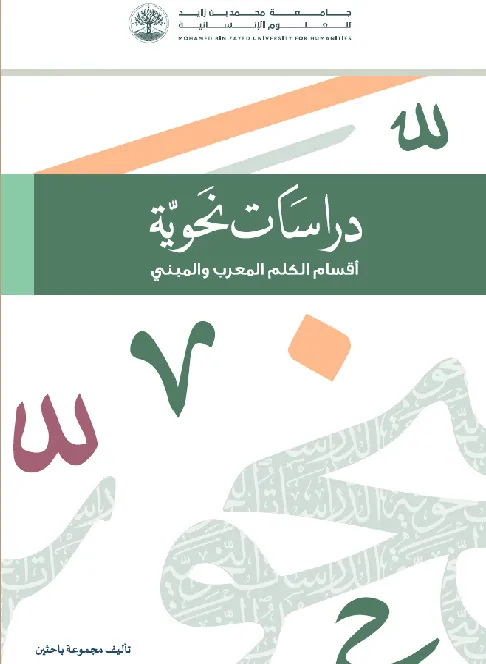

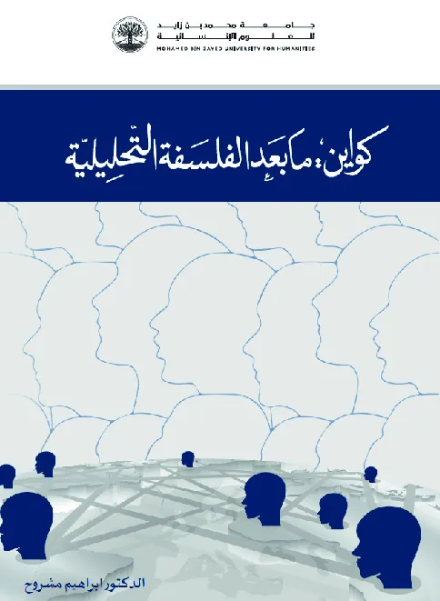
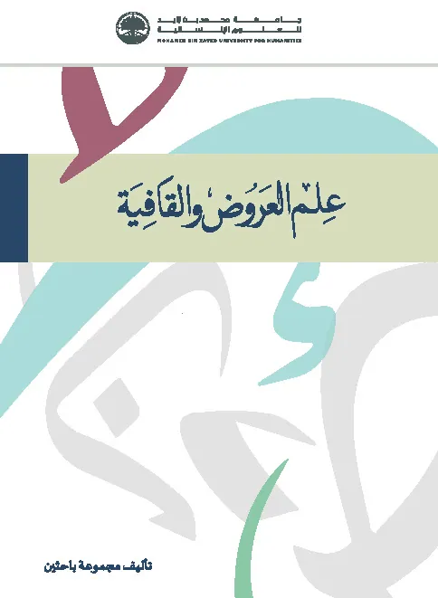
لا توجد مقالات مطابقة.
أرسل مقالك ليظهر في قائمة مراجعة المحررين ببوابة الموظف. تجريبي: يُحفظ على هذا الجهاز فقط ولا يُرسل إلى أي جهة.